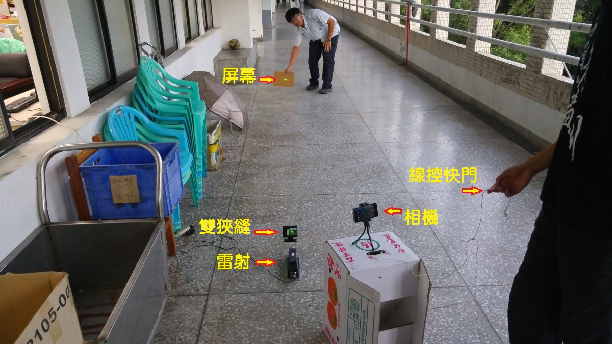
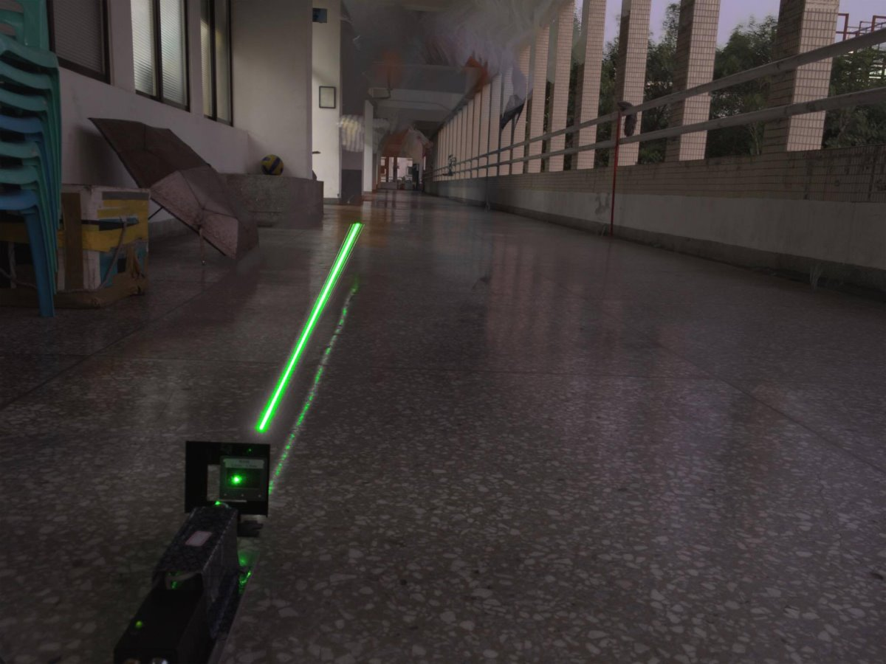
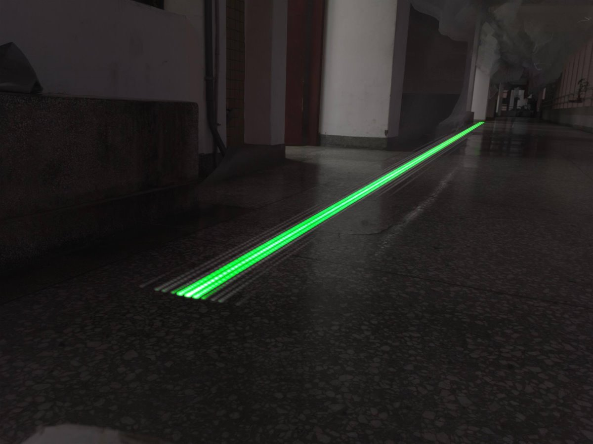
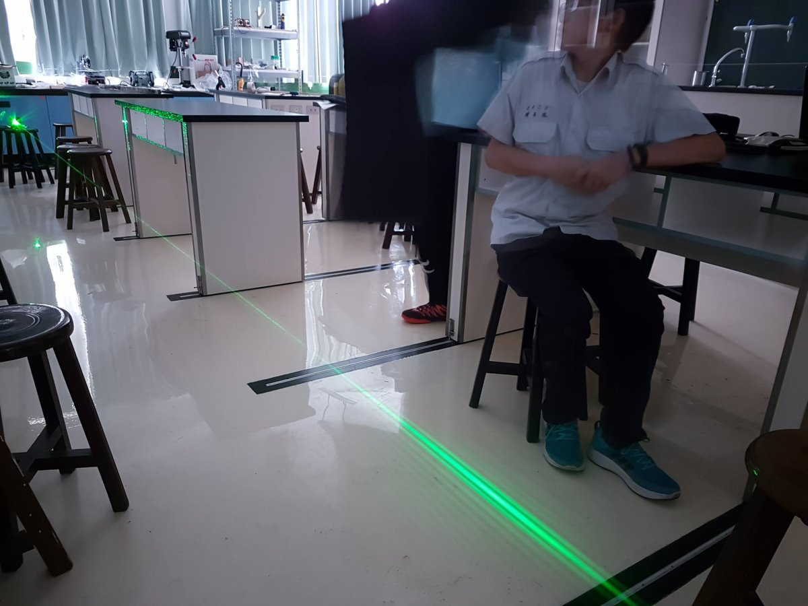
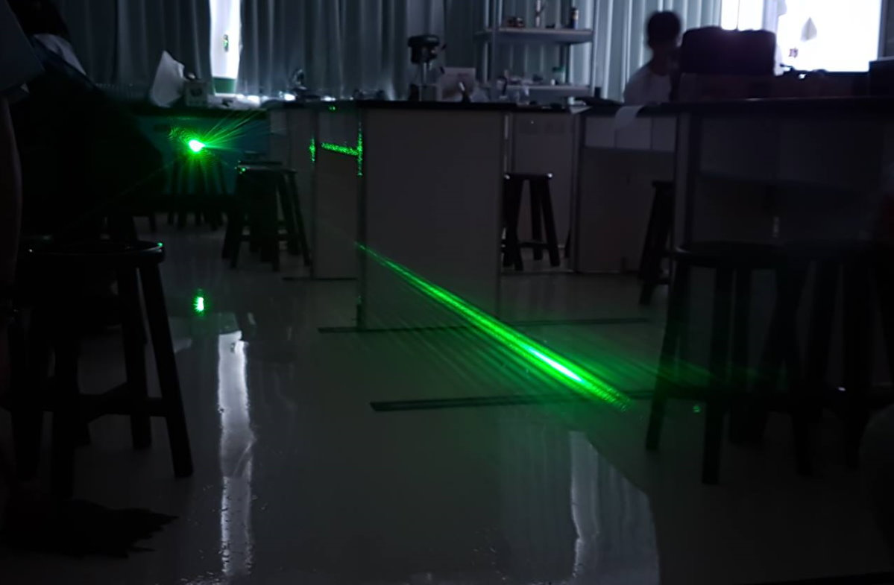

↑這是一個很常見的雙狹縫干涉實驗，雷射經過雙狹縫後干涉，干涉條紋投影在屏幕上。
學生說想看看狹縫到屏幕中間光線發生了甚麼事。
↑於是將屏幕漸漸後退，並用相機長時間曝光拍下過程。

↑拍出來的照片，一開始亮暗紋擠在一起，越後面越分開。

↑到遠一點的地方再拍一次，亮暗紋(節線腹線)分開的越來越明顯。
從這個相片中，我們可以知道光的干涉其實在離開狹縫時就已經完成。
每一個方位的亮暗紋(節線腹線)決定好後，接下來就是直線向外傳遞而已。
以上照片由
師大附中1415班黃子權同學發想、執行與拍攝。
感謝1419班湯智斌同學協助拍攝
2017/11/01
隔日，師大附中的同事就用更專業的相機拍出下面的作品：

↑單眼相機的長時間曝光就是不一樣。

↑旁邊的亮紋都拍得好清楚。
以上照片由
師大附中 高銘宏 老師指導學生
1427吳俊佑、1428邱昱豪、陳昇鴻拍攝。
2017/11/02